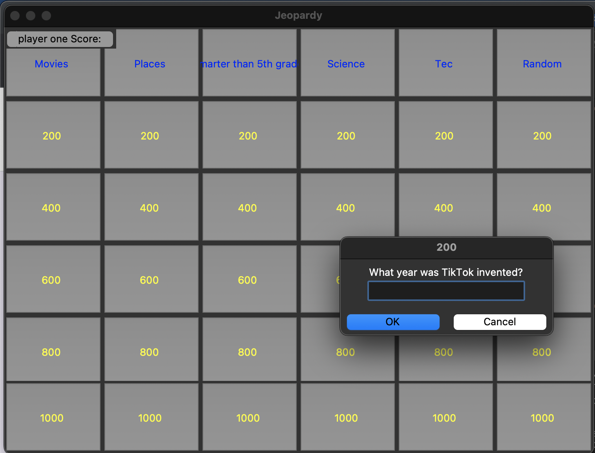
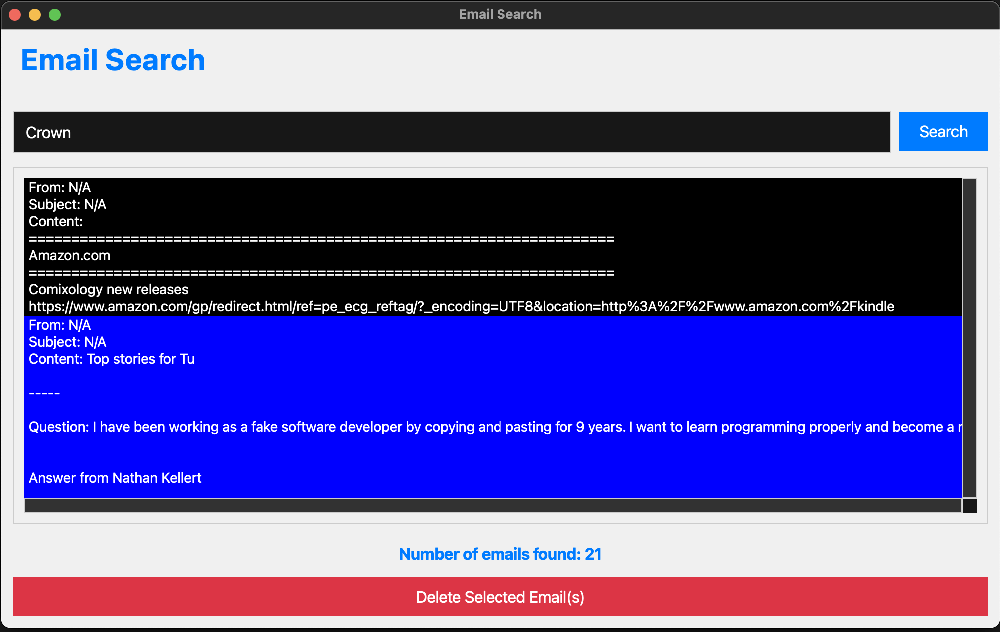

Hello, I'm Mihiretu Jackson
I'm a passionate Computer Science major, ready to make an impact in the tech world.
About Me
Hi, I'm Mihiretu Jackson, a passionate Computer Science major with a strong interest in software development and Data Science. I'm currently pursuing my degree at Virginia State University, where I have been exposed to a wide range of computer science topics, including object oriented programming, algorithms, web development, and more.
I love taking on challenging projects and finding innovative solutions to real-world problems. Throughout my academic journey, I have actively participated in various coding competitions and hackathons, honing my skills and collaborating with like-minded individuals.
I am eager to apply my knowledge and skills in a professional environment where I can contribute to meaningful projects and continue learning and growing as a developer.
Project 1: Jeopardy Game
Project Description: A Python application designed to make learning fun through Jeopardy
- It is an interactive jeopardy game using Python Tkinter GUI interface.
- The game mimics most features of a Jeopardy game with the system expecting an input and interacting back if the answer is correct or incorrect.
- The game has a score feature where it displays your score based on how well you are doing
Technologies Used: Python, Tkinter
Project 2: Email Management Application
Project Description: Developed an Email Management Application using Pythont
- Integrated the Gmail API to enable efficient email searching and management
- Implemented advanced email parsing with the email library to support various email formats, inline images, and attachments
- Enabled users to search for emails by keywords, view email details, and delete selected emails with ease.
- Utilized PySide6 for the application's interactive user interface (GUI) to ensure a smooth user experience.
- Implemented asynchronous email fetching to maintain application responsiveness during long searches.
- Prioritized security by handling OAuth2 credentials securely to protect user data
Technologies Used: 🐍 Python, PySide6, Google API, BeautifulSoup, threading
Project 3: Research Project Preliminary Application

Project Description: Member of an Apple and Propel sponsored project team to develop an application that can detect frustration in young readers and address it using artificial intelligence
- Created an application using Swift UI.
- The application has a built in video player that allows the user to directly pick videos from the files app and play them while at the same time having a functional camera feed that records them and later use that recording for AI training.
- Researched the use of Apple watches when measuring data and presented those findings to the team
- Transcribing video and audio data to confirm their quality for future analysis
- Learning to use artificial intelligence tools to analyze video and audio data.
Technologies Used: UIKIt, AVKit, MobileCoreServices, AVCaptureSession, CoreML(future)
Project 4: Physical Activity Analysis
Project Description: Used data science to address real world issues in the health industry.
- My summer research project aimed to investigate the impact of private school education on the physical health outcomes of individuals in comparison to those who attended public schools.
- I used FLASHE Data from the National Cancer Institute for my research..
- After Participating in a two-week R data skills course, I analyzed and cleaned the data using R Studio.
- I presented my findings at a symposium at the closing of the program.
Technologies Used: R Studio, R
Skills
Technical Skills
- Programming Languages: Java, Python, JavaScript, Swift, R
- Web Development: HTML, CSS, JavaScript, React
- Backend Development: Pthon, Java, JavaScript
- Database: Firebase
- Version Control: Git, GitHub
Additional Skills
- Problem-Solving and Algorithms
- Data Structures and Algorithms
- Object-Oriented Design
- Teamwork and Collaboration
- Communication and Presentation
Contact Me
I'm excited to hear from you! Feel free to reach out if you have any questions, opportunities, or just want to say hello. You can contact me through the form below or connect with me on my social media profiles.